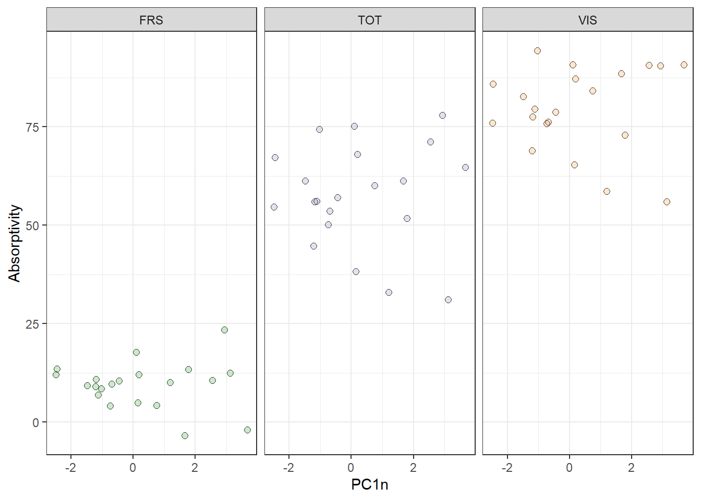
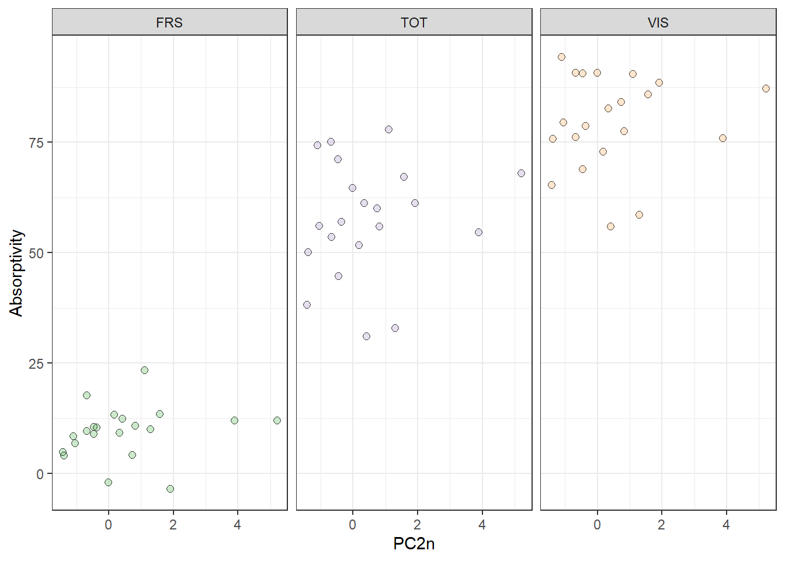

In this script we repeated the PGLs analysis excluding the outliers: A. prasinus and the species belonging to the genus Xylonichus, Paraschizognathus because these species are known to have an independent mechanism to enhance NIR reflectivity, which could potentially also alter absorptivity. The main change is the exclusion of these species with “str_detect” in the chunk “Data Sets”.
source(here::here("Scripts/MacroEcol_1_Libraries.R")) # we source the libraries from this file Absorptivity data
Initially we import the absorptivity data obtained in the script “optical properties” and join it with the environmental data obtained in “Ecological variables”
Cons1aggA <- read.csv(here::here("Data/FromCode/ConsolidatedAbsorptivitySpp.csv"))[-1] %>%
dplyr::arrange(phylogeny_name) %>%
dplyr::filter(
!str_detect(phylogeny_name, "Xylonichus_sp"),
!str_detect(phylogeny_name, "Anoplognathus_prasinus"),
!str_detect(phylogeny_name, "Paraschizognathus_ocularis"),
!str_detect(phylogeny_name, "Paraschizognathus_prasinus"),
!str_detect(phylogeny_name, "Paraschizognathus_olivaceous")
)
# PC Values
PCValuesF <- read.csv(here::here("Data/FromCode/PCsbySpp.csv"))[-1] %>%
dplyr::arrange(phylogeny_name) %>%
dplyr::filter(
!str_detect(phylogeny_name, "Xylonichus_sp"),
!str_detect(phylogeny_name, "Anoplognathus_prasinus"),
!str_detect(phylogeny_name, "Paraschizognathus_ocularis"),
!str_detect(phylogeny_name, "Paraschizognathus_prasinus"),
!str_detect(phylogeny_name, "Paraschizognathus_olivaceous")
)
Cons1aggA <-
PCValuesF %>%
filter(phylogeny_name %in% Cons1aggA$phylogeny_name) %>%
arrange(phylogeny_name) %>%
bind_cols(., Cons1aggA) %>%
dplyr::select(1:3,5:10) %>%
dplyr::rename("phylogeny_name" = phylogeny_name...1, "PC1" = PC1_1, "PC2" = PC2_1) Phylogenetic data
In our analyses we use a subset of the 1300 posterior sample trees to represent the phylogenetic information accounting for uncertainty in node ages and topology
# set subset limits
trees_subset_min<-1000
trees_subset_max<-2000Phylogeny (multiple trees)
trees <- ape::read.tree(here::here("Data/XMAS_mat2b_bst2ef_set23nn2_pinct.nwk"))
MCCtree.raw <-
ape::read.nexus(here::here("Data/xmas_mat2b_bst2ef_set23nn2_pinct_med.tre"))The MCC (Maximum clade credibility) tree used here is the BEAST MCC tree. We did not need to prun the tree. The equivalence between specie sin the tree and data frame was tested in previous steps (tab optical properties).
Merge
# Modify to make it compatible with tree tips
Cons1aggA <- as.data.frame(Cons1aggA) # convert to a data frame
rownames(Cons1aggA) <- Cons1aggA[, 1] # make species the row names
ConsAggA <- Cons1aggA [,2:length(Cons1aggA)] # eliminate spp name (redundant)The names between data and tree tips should match.
# Prune extra spp in the tree, not contain in the test sample
species.MCC <- as.data.frame(unique(Cons1aggA$phylogeny_name))
# Convert to "row names" (required for following steps)
row.names(species.MCC) <- species.MCC[, 1]
# Make sure the names in data set and tree match
temp.MCC <- name.check(MCCtree.raw, species.MCC)
# This step is necessary because the tips are different.
MCCtree <- drop.tip(MCCtree.raw, temp.MCC$tree_not_data)
# Test if the species are the same
identical(
length(name.check(MCCtree, Cons1aggA$phylogeny_name)$tree_not_data),
length(Cons1aggA$phylogeny_name)
)## [1] TRUE Subsets
Create subsets for each spectral band. In these subsets the response variable is always called “response” so that we can use the same function to run various models.
In this script, the response variable is the reflectance on each spectral band or the NIR/VIS residuals.
ALLDataSetA <-
Cons1aggA %>%
dplyr::select (-VIS, -NIR, -FRS, -FRSP) %>%
dplyr::rename ("Response" = TOT)
NIRDataSetA <-
Cons1aggA %>%
dplyr::select (-TOT, -VIS, -FRS, -FRSP) %>%
dplyr::rename ("Response" = NIR)
VISDataSetA <-
Cons1aggA %>%
dplyr::select (-TOT, -NIR, -FRS, -FRSP) %>%
dplyr::rename ("Response" = VIS)
NmoDataSetA <-
Cons1aggA %>%
dplyr::select (-TOT, -FRS, -FRSP) %>% # keep VIS as predictor
dplyr::rename ("Response" = NIR) # Raw NIR
FRSDataSetA <-
Cons1aggA %>%
dplyr::select (-TOT, -NIR, -VIS, -FRSP) %>%
dplyr::rename ("Response" = FRS) # PGLS Residuals
PRSDataSetA <-
Cons1aggA %>%
dplyr::select (-TOT, -NIR, -VIS, -FRS) %>%
dplyr::rename ("Response" = FRSP) # PGLS Phyres residualsThe PGLS function has to be adapted to the data frame and model on each case.
PGLS in the MCC
comp_data <- comparative.data(
phy = MCCtree, data = Cons1aggA,
names.col = "phylogeny_name", vcv = TRUE,
na.omit = FALSE, warn.dropped = TRUE
)PGLS Multiple Trees with 5 predictors + intercept
Source function
note that this function has to be adapted to the data frame and model on each case
source(here::here("Scripts/8_multiple_pgls_function_C.R")) # function C is for absorptivity as responseDefine model
MuPGLSMod2A <- Response ~ PC1 + PC2 + size + PC1*size + PC2*sizePGLS in multiple trees for NIR contains 6 predictors + intercept. The extra predictor here is the “VIS” absorptivity to account for the correlation of these two variables.
source(here::here("Scripts/9_multiple_pgls_function_D.R")) # function D: NIR explained by PCs and VISDefine model
MuPGLSMod3A <- Response ~ PC1 + PC2 + size + PC1*size + PC2*size + VISPGLS Multiple Trees with 3 predictors + intercept
We run simplified models with only one pc for each spectral band including only the predictors that were significant in the full model. (because the visible absorptivity seems to be more correlated to PC1 and the NIR to PC2)
Source function
note that this function has to be adapted to the data frame and model on each case
source(here::here("Scripts/10_multiple_pgls_function_E.R")) # function E: simplified. One PC and sizeDefine model
MuPGLSMod4A <- Response ~ PC + size + PC*size PGLS Multiple Trees with 4 predictors + intercept
We run simplified models with only one pc for each spectral band including only the predictors that were signifficant in the full model (because the visible reflectance seems to be more correlated to PC1 and the NIR to PC2). However, for NIR we need to include VIS reflectance as a predictor
Source function
note that this function has to be adapted to the data frame and model on each case
source(here::here("Scripts/11_multiple_pgls_function_F.R")) # F: One PC, size and VIS as predictorsDefine model
MuPGLSMod5A <- Response ~ PC + size + PC*size + VISThe PGLS model tests if the correlations we found in the previous step remain after correcting by phylogeny. This model does not consider instraspecific variation. We averaged both location and absorptivity and obtained only one value per species.
pglsmodTOTA <- pgls(TOT ~ PC1 + PC2 + size + PC1*size + PC2*size,
data = comp_data, param.CI = 0.95, lambda = "ML",
bounds = list(lambda=c(1e-5,1)) # modify bounds (defaults are c(1e-6,1))
)
FinMccTotcA <- as.numeric(round(summary(pglsmodTOTA)$coefficients[,1],3))
FinMccTotpA <- as.numeric(round(summary(pglsmodTOTA)$coefficients[,4],3)) None of the variables has an effect in the total absorptivity.
runsTOTA<-lapply(trees[trees_subset_min:trees_subset_max],
pgls_runC,
model=MuPGLSMod2A,
dataset=ALLDataSetA) ## ERROR : Problem with optim:52ERROR: ABNORMAL_TERMINATION_IN_LNSRCH
## ERROR : Problem with optim:52ERROR: ABNORMAL_TERMINATION_IN_LNSRCH
## ERROR : Problem with optim:52ERROR: ABNORMAL_TERMINATION_IN_LNSRCH
## ERROR : Problem with optim:52ERROR: ABNORMAL_TERMINATION_IN_LNSRCH
## ERROR : Problem with optim:52ERROR: ABNORMAL_TERMINATION_IN_LNSRCH
## ERROR : Problem with optim:52ERROR: ABNORMAL_TERMINATION_IN_LNSRCH
## ERROR : Problem with optim:52ERROR: ABNORMAL_TERMINATION_IN_LNSRCH
## ERROR : Problem with optim:52ERROR: ABNORMAL_TERMINATION_IN_LNSRCH
## ERROR : Problem with optim:52ERROR: ABNORMAL_TERMINATION_IN_LNSRCH
## ERROR : Problem with optim:52ERROR: ABNORMAL_TERMINATION_IN_LNSRCH
## ERROR : Problem with optim:52ERROR: ABNORMAL_TERMINATION_IN_LNSRCH
## ERROR : Problem with optim:52ERROR: ABNORMAL_TERMINATION_IN_LNSRCH
## ERROR : Problem with optim:52ERROR: ABNORMAL_TERMINATION_IN_LNSRCH
## ERROR : Problem with optim:52ERROR: ABNORMAL_TERMINATION_IN_LNSRCH
## ERROR : Problem with optim:52ERROR: ABNORMAL_TERMINATION_IN_LNSRCH
## ERROR : Problem with optim:52ERROR: ABNORMAL_TERMINATION_IN_LNSRCH
## ERROR : Problem with optim:52ERROR: ABNORMAL_TERMINATION_IN_LNSRCH
## ERROR : Problem with optim:52ERROR: ABNORMAL_TERMINATION_IN_LNSRCH
## ERROR : Problem with optim:52ERROR: ABNORMAL_TERMINATION_IN_LNSRCH
## ERROR : Problem with optim:52ERROR: ABNORMAL_TERMINATION_IN_LNSRCH
## ERROR : Problem with optim:52ERROR: ABNORMAL_TERMINATION_IN_LNSRCH
## ERROR : Problem with optim:52ERROR: ABNORMAL_TERMINATION_IN_LNSRCH
## ERROR : Problem with optim:52ERROR: ABNORMAL_TERMINATION_IN_LNSRCH
## ERROR : Problem with optim:52ERROR: ABNORMAL_TERMINATION_IN_LNSRCH
## ERROR : Problem with optim:52ERROR: ABNORMAL_TERMINATION_IN_LNSRCH
## ERROR : Problem with optim:52ERROR: ABNORMAL_TERMINATION_IN_LNSRCH
## ERROR : Problem with optim:52ERROR: ABNORMAL_TERMINATION_IN_LNSRCH
## ERROR : Problem with optim:52ERROR: ABNORMAL_TERMINATION_IN_LNSRCH
## ERROR : Problem with optim:52ERROR: ABNORMAL_TERMINATION_IN_LNSRCH
## ERROR : Problem with optim:52ERROR: ABNORMAL_TERMINATION_IN_LNSRCH
## ERROR : Problem with optim:52ERROR: ABNORMAL_TERMINATION_IN_LNSRCH
## ERROR : Problem with optim:52ERROR: ABNORMAL_TERMINATION_IN_LNSRCH
## ERROR : Problem with optim:52ERROR: ABNORMAL_TERMINATION_IN_LNSRCHdfTOTA <- ldply(runsTOTA, data.frame)
length(dfTOTA[,1])## [1] 968write.csv(dfTOTA, here::here("Data/FromCode/MuTPglsResultsTOTAbsorptivity_QC.csv"))
FinTotMA <- HPDinterval(as.mcmc(dfTOTA))pglsmodVISA <- pgls(VIS ~ PC1 + PC2 + size + PC1*size + PC2*size,
data = comp_data, param.CI = 0.95, lambda = "ML"
)
FinMccViscA <- as.numeric(round(summary(pglsmodVISA)$coefficients[,1],3))
FinMccVispA <- as.numeric(round(summary(pglsmodVISA)$coefficients[,4],3))runsVISA<-lapply(trees[trees_subset_min:trees_subset_max],
pgls_runC,
model=MuPGLSMod2A,
dataset=VISDataSetA) ## ERROR : Problem with optim:52ERROR: ABNORMAL_TERMINATION_IN_LNSRCH
## ERROR : Problem with optim:52ERROR: ABNORMAL_TERMINATION_IN_LNSRCH
## ERROR : Problem with optim:52ERROR: ABNORMAL_TERMINATION_IN_LNSRCH
## ERROR : Problem with optim:52ERROR: ABNORMAL_TERMINATION_IN_LNSRCH
## ERROR : Problem with optim:52ERROR: ABNORMAL_TERMINATION_IN_LNSRCH
## ERROR : Problem with optim:52ERROR: ABNORMAL_TERMINATION_IN_LNSRCH
## ERROR : Problem with optim:52ERROR: ABNORMAL_TERMINATION_IN_LNSRCH
## ERROR : Problem with optim:52ERROR: ABNORMAL_TERMINATION_IN_LNSRCH
## ERROR : Problem with optim:52ERROR: ABNORMAL_TERMINATION_IN_LNSRCH
## ERROR : Problem with optim:52ERROR: ABNORMAL_TERMINATION_IN_LNSRCH
## ERROR : Problem with optim:52ERROR: ABNORMAL_TERMINATION_IN_LNSRCH
## ERROR : Problem with optim:52ERROR: ABNORMAL_TERMINATION_IN_LNSRCH
## ERROR : Problem with optim:52ERROR: ABNORMAL_TERMINATION_IN_LNSRCH
## ERROR : Problem with optim:52ERROR: ABNORMAL_TERMINATION_IN_LNSRCH
## ERROR : Problem with optim:52ERROR: ABNORMAL_TERMINATION_IN_LNSRCH
## ERROR : Problem with optim:52ERROR: ABNORMAL_TERMINATION_IN_LNSRCH
## ERROR : Problem with optim:52ERROR: ABNORMAL_TERMINATION_IN_LNSRCH
## ERROR : Problem with optim:52ERROR: ABNORMAL_TERMINATION_IN_LNSRCH
## ERROR : Problem with optim:52ERROR: ABNORMAL_TERMINATION_IN_LNSRCH
## ERROR : Problem with optim:52ERROR: ABNORMAL_TERMINATION_IN_LNSRCH
## ERROR : Problem with optim:52ERROR: ABNORMAL_TERMINATION_IN_LNSRCH
## ERROR : Problem with optim:52ERROR: ABNORMAL_TERMINATION_IN_LNSRCH
## ERROR : Problem with optim:52ERROR: ABNORMAL_TERMINATION_IN_LNSRCH
## ERROR : Problem with optim:52ERROR: ABNORMAL_TERMINATION_IN_LNSRCH
## ERROR : Problem with optim:52ERROR: ABNORMAL_TERMINATION_IN_LNSRCH
## ERROR : Problem with optim:52ERROR: ABNORMAL_TERMINATION_IN_LNSRCH
## ERROR : Problem with optim:52ERROR: ABNORMAL_TERMINATION_IN_LNSRCH
## ERROR : Problem with optim:52ERROR: ABNORMAL_TERMINATION_IN_LNSRCH
## ERROR : Problem with optim:52ERROR: ABNORMAL_TERMINATION_IN_LNSRCH
## ERROR : Problem with optim:52ERROR: ABNORMAL_TERMINATION_IN_LNSRCHdfVISA <- ldply (runsVISA, data.frame)
length(dfVISA[,1])## [1] 971write.csv(dfVISA, here::here("Data/FromCode/MuTPglsResultsVISAbsorptivity_QC.csv"))
FinVisMA <- HPDinterval(as.mcmc(dfVISA))spglsmodVISA <- pgls(VIS ~ PC1 + size + PC1*size,
data = comp_data, param.CI = 0.95, lambda = "ML"
)
summary(spglsmodVISA)##
## Call:
## pgls(formula = VIS ~ PC1 + size + PC1 * size, data = comp_data,
## lambda = "ML", param.CI = 0.95)
##
## Residuals:
## Min 1Q Median 3Q Max
## -3.5886 -0.8143 1.4518 3.2674 11.2300
##
## Branch length transformations:
##
## kappa [Fix] : 1.000
## lambda [ ML] : 0.964
## lower bound : 0.000, p = 0.22377
## upper bound : 1.000, p = 0.47331
## 95.0% CI : (NA, NA)
## delta [Fix] : 1.000
##
## Coefficients:
## Estimate Std. Error t value Pr(>|t|)
## (Intercept) 77.59493 18.31947 4.2357 0.0005571 ***
## PC1 0.36711 5.95061 0.0617 0.9515274
## size 1.81514 6.72102 0.2701 0.7903578
## PC1:size -0.30454 2.64168 -0.1153 0.9095713
## ---
## Signif. codes: 0 '***' 0.001 '**' 0.01 '*' 0.05 '.' 0.1 ' ' 1
##
## Residual standard error: 4.323 on 17 degrees of freedom
## Multiple R-squared: 0.005126, Adjusted R-squared: -0.1704
## F-statistic: 0.0292 on 3 and 17 DF, p-value: 0.993sFinMccViscA <- as.numeric(round(summary(spglsmodVISA)$coefficients[,1],3))
sFinMccVispA <- as.numeric(round(summary(spglsmodVISA)$coefficients[,4],3))First step is to modify the data frame.
SimpleVISA <-
VISDataSetA %>%
dplyr::select(phylogeny_name, Response, size, PC1) %>%
dplyr::rename("PC" = PC1)
SimpleVISA <- as.data.frame(SimpleVISA)Now run the model
runsVISsimpleA<-lapply(trees[trees_subset_min:trees_subset_max],
pgls_runE,
model=MuPGLSMod4A,
dataset=SimpleVISA) ## ERROR : Problem with optim:52ERROR: ABNORMAL_TERMINATION_IN_LNSRCH
## ERROR : Problem with optim:52ERROR: ABNORMAL_TERMINATION_IN_LNSRCH
## ERROR : Problem with optim:52ERROR: ABNORMAL_TERMINATION_IN_LNSRCH
## ERROR : Problem with optim:52ERROR: ABNORMAL_TERMINATION_IN_LNSRCH
## ERROR : Problem with optim:52ERROR: ABNORMAL_TERMINATION_IN_LNSRCH
## ERROR : Problem with optim:52ERROR: ABNORMAL_TERMINATION_IN_LNSRCH
## ERROR : Problem with optim:52ERROR: ABNORMAL_TERMINATION_IN_LNSRCH
## ERROR : Problem with optim:52ERROR: ABNORMAL_TERMINATION_IN_LNSRCH
## ERROR : Problem with optim:52ERROR: ABNORMAL_TERMINATION_IN_LNSRCH
## ERROR : Problem with optim:52ERROR: ABNORMAL_TERMINATION_IN_LNSRCH
## ERROR : Problem with optim:52ERROR: ABNORMAL_TERMINATION_IN_LNSRCH
## ERROR : Problem with optim:52ERROR: ABNORMAL_TERMINATION_IN_LNSRCH
## ERROR : Problem with optim:52ERROR: ABNORMAL_TERMINATION_IN_LNSRCH
## ERROR : Problem with optim:52ERROR: ABNORMAL_TERMINATION_IN_LNSRCH
## ERROR : Problem with optim:52ERROR: ABNORMAL_TERMINATION_IN_LNSRCH
## ERROR : Problem with optim:52ERROR: ABNORMAL_TERMINATION_IN_LNSRCH
## ERROR : Problem with optim:52ERROR: ABNORMAL_TERMINATION_IN_LNSRCH
## ERROR : Problem with optim:52ERROR: ABNORMAL_TERMINATION_IN_LNSRCH
## ERROR : Problem with optim:52ERROR: ABNORMAL_TERMINATION_IN_LNSRCH
## ERROR : Problem with optim:52ERROR: ABNORMAL_TERMINATION_IN_LNSRCH
## ERROR : Problem with optim:52ERROR: ABNORMAL_TERMINATION_IN_LNSRCH
## ERROR : Problem with optim:52ERROR: ABNORMAL_TERMINATION_IN_LNSRCH
## ERROR : Problem with optim:52ERROR: ABNORMAL_TERMINATION_IN_LNSRCH
## ERROR : Problem with optim:52ERROR: ABNORMAL_TERMINATION_IN_LNSRCH
## ERROR : Problem with optim:52ERROR: ABNORMAL_TERMINATION_IN_LNSRCH
## ERROR : Problem with optim:52ERROR: ABNORMAL_TERMINATION_IN_LNSRCH
## ERROR : Problem with optim:52ERROR: ABNORMAL_TERMINATION_IN_LNSRCH
## ERROR : Problem with optim:52ERROR: ABNORMAL_TERMINATION_IN_LNSRCH
## ERROR : Problem with optim:52ERROR: ABNORMAL_TERMINATION_IN_LNSRCH
## ERROR : Problem with optim:52ERROR: ABNORMAL_TERMINATION_IN_LNSRCH
## ERROR : Problem with optim:52ERROR: ABNORMAL_TERMINATION_IN_LNSRCH
## ERROR : Problem with optim:52ERROR: ABNORMAL_TERMINATION_IN_LNSRCH
## ERROR : Problem with optim:52ERROR: ABNORMAL_TERMINATION_IN_LNSRCH
## ERROR : Problem with optim:52ERROR: ABNORMAL_TERMINATION_IN_LNSRCH
## ERROR : Problem with optim:52ERROR: ABNORMAL_TERMINATION_IN_LNSRCHdfVISsimpleA <- ldply(runsVISsimpleA, data.frame)
length(dfVISsimpleA[,1])## [1] 966FinVisSA <- HPDinterval(as.mcmc(dfVISsimpleA))pglsmodNIRA <- pgls(NIR ~ PC1 + PC2 + size + PC1*size + PC2*size + VIS,
data = comp_data, param.CI = 0.95, lambda = "ML"
)
FinMccNircA <- as.numeric(round(summary(pglsmodNIRA)$coefficients[,1],3))
FinMccNirpA <- as.numeric(round(summary(pglsmodNIRA)$coefficients[,4],3))Results after correcting by phylogeny:
None of the variables has an effect in the NIR absorptivity.
runsNIRA<-lapply(trees[trees_subset_min:trees_subset_max],
pgls_runD,
model=MuPGLSMod3A,
dataset=NmoDataSetA) ## ERROR : Problem with optim:52ERROR: ABNORMAL_TERMINATION_IN_LNSRCH
## ERROR : Problem with optim:52ERROR: ABNORMAL_TERMINATION_IN_LNSRCH
## ERROR : Problem with optim:52ERROR: ABNORMAL_TERMINATION_IN_LNSRCH
## ERROR : Problem with optim:52ERROR: ABNORMAL_TERMINATION_IN_LNSRCH
## ERROR : Problem with optim:52ERROR: ABNORMAL_TERMINATION_IN_LNSRCH
## ERROR : Problem with optim:52ERROR: ABNORMAL_TERMINATION_IN_LNSRCH
## ERROR : Problem with optim:52ERROR: ABNORMAL_TERMINATION_IN_LNSRCH
## ERROR : Problem with optim:52ERROR: ABNORMAL_TERMINATION_IN_LNSRCH
## ERROR : Problem with optim:52ERROR: ABNORMAL_TERMINATION_IN_LNSRCH
## ERROR : Problem with optim:52ERROR: ABNORMAL_TERMINATION_IN_LNSRCH
## ERROR : Problem with optim:52ERROR: ABNORMAL_TERMINATION_IN_LNSRCH
## ERROR : Problem with optim:52ERROR: ABNORMAL_TERMINATION_IN_LNSRCH
## ERROR : Problem with optim:52ERROR: ABNORMAL_TERMINATION_IN_LNSRCH
## ERROR : Problem with optim:52ERROR: ABNORMAL_TERMINATION_IN_LNSRCH
## ERROR : Problem with optim:52ERROR: ABNORMAL_TERMINATION_IN_LNSRCH
## ERROR : Problem with optim:52ERROR: ABNORMAL_TERMINATION_IN_LNSRCH
## ERROR : Problem with optim:52ERROR: ABNORMAL_TERMINATION_IN_LNSRCH
## ERROR : Problem with optim:52ERROR: ABNORMAL_TERMINATION_IN_LNSRCH
## ERROR : Problem with optim:52ERROR: ABNORMAL_TERMINATION_IN_LNSRCH
## ERROR : Problem with optim:52ERROR: ABNORMAL_TERMINATION_IN_LNSRCH
## ERROR : Problem with optim:52ERROR: ABNORMAL_TERMINATION_IN_LNSRCH
## ERROR : Problem with optim:52ERROR: ABNORMAL_TERMINATION_IN_LNSRCHdfNIRA <- ldply(runsNIRA, data.frame)
length(dfNIRA[,1])## [1] 979write.csv(dfNIRA, here::here("Data/FromCode/MuTPglsResultsNmoAbsorptivity_QC.csv"))
FinNirMA <- HPDinterval(as.mcmc(dfNIRA))spglsmodNIRA <- pgls(NIR ~ PC2 + size + PC2*size + VIS,
data = comp_data, param.CI = 0.95, lambda = "ML"
)
sFinMccNircA <- as.numeric(round(summary(spglsmodNIRA)$coefficients[,1],3))
sFinMccNirpA <- as.numeric(round(summary(spglsmodNIRA)$coefficients[,4],3))First step is to modify the data frame.
SimpleNIRA <-
NmoDataSetA %>%
dplyr::select(phylogeny_name, Response, size, VIS, PC2) %>%
dplyr::rename("PC" = PC2)
SimpleNIRA <- as.data.frame(SimpleNIRA)
head(SimpleNIRA)## phylogeny_name Response size VIS
## Anomala_antigua Anomala_antigua 37.457412 1.767500 88.49838
## Anoplognathus_aureus Anoplognathus_aureus 9.557756 1.714000 55.92975
## Anoplognathus_brunnipennis Anoplognathus_brunnipennis 23.589031 2.330667 68.88987
## Anoplognathus_concolor Anoplognathus_concolor 14.628072 2.175000 65.35370
## Anoplognathus_hirsutus Anoplognathus_hirsutus 35.732388 2.321429 79.49740
## Anoplognathus_macleayi Anoplognathus_macleayi 36.007010 3.025500 75.90286
## PC
## Anomala_antigua -1.9015325
## Anoplognathus_aureus -0.4118618
## Anoplognathus_brunnipennis 0.4607792
## Anoplognathus_concolor 1.4279128
## Anoplognathus_hirsutus 1.0545415
## Anoplognathus_macleayi -3.8769082Now run the model
runsNIRsimpleA<-lapply(trees[trees_subset_min:trees_subset_max],
pgls_runF,
model=MuPGLSMod5A,
dataset=SimpleNIRA) ## ERROR : Problem with optim:52ERROR: ABNORMAL_TERMINATION_IN_LNSRCH
## ERROR : Problem with optim:52ERROR: ABNORMAL_TERMINATION_IN_LNSRCH
## ERROR : Problem with optim:52ERROR: ABNORMAL_TERMINATION_IN_LNSRCH
## ERROR : Problem with optim:52ERROR: ABNORMAL_TERMINATION_IN_LNSRCHdfNIRsimpleA <- ldply(runsNIRsimpleA, data.frame)
length(dfNIRsimpleA[,1])## [1] 997FinNirSA <- HPDinterval(as.mcmc(dfNIRsimpleA))Residuals between NIR ~ VIS corrected by phylogeny. Extracted as model$residuals
pglsmodFRSA <- pgls(FRS ~ PC1 + PC2 + size + PC1*size + PC2*size,
data = comp_data, param.CI = 0.95, lambda = "ML"
)
FinMccFRScA <- as.numeric(round(summary(pglsmodFRSA)$coefficients[,1],3))
FinMccFRSpA <- as.numeric(round(summary(pglsmodFRSA)$coefficients[,4],3))Residuals between NIR ~ VIS corrected by phylogeny. Extracted as model$residuals
runsFRSA<-lapply(trees[trees_subset_min:trees_subset_max],
pgls_runC,
model=MuPGLSMod2A,
dataset=FRSDataSetA) ## ERROR : Problem with optim:52ERROR: ABNORMAL_TERMINATION_IN_LNSRCH
## ERROR : Problem with optim:52ERROR: ABNORMAL_TERMINATION_IN_LNSRCH
## ERROR : Problem with optim:52ERROR: ABNORMAL_TERMINATION_IN_LNSRCH
## ERROR : Problem with optim:52ERROR: ABNORMAL_TERMINATION_IN_LNSRCH
## ERROR : Problem with optim:52ERROR: ABNORMAL_TERMINATION_IN_LNSRCH
## ERROR : Problem with optim:52ERROR: ABNORMAL_TERMINATION_IN_LNSRCH
## ERROR : Problem with optim:52ERROR: ABNORMAL_TERMINATION_IN_LNSRCH
## ERROR : Problem with optim:52ERROR: ABNORMAL_TERMINATION_IN_LNSRCH
## ERROR : Problem with optim:52ERROR: ABNORMAL_TERMINATION_IN_LNSRCH
## ERROR : Problem with optim:52ERROR: ABNORMAL_TERMINATION_IN_LNSRCH
## ERROR : Problem with optim:52ERROR: ABNORMAL_TERMINATION_IN_LNSRCH
## ERROR : Problem with optim:52ERROR: ABNORMAL_TERMINATION_IN_LNSRCHdfFRSA <- ldply(runsFRSA, data.frame)
length(dfFRSA[,1])## [1] 989write.csv(dfFRSA, here::here("Data/FromCode/MuTPglsFRSultsFRSAbsorptivity_QC.csv"))
FinFRSMA <- HPDinterval(as.mcmc(dfFRSA))spglsmodFRSA <- pgls(FRS ~ PC2 + size + PC2*size,
data = comp_data, param.CI = 0.95, lambda = "ML"
)
sFinMccFRScA <- as.numeric(round(summary(spglsmodFRSA)$coefficients[,1],3))
sFinMccFRSpA <- as.numeric(round(summary(spglsmodFRSA)$coefficients[,4],3))First step is to modify the data frame.
SimpleFRSA <-
FRSDataSetA %>%
dplyr::select(phylogeny_name, Response, size, PC2) %>%
dplyr::rename(PC = PC2)
SimpleFRSA <- as.data.frame(SimpleFRSA)Now run the model
runsFRSsimpleA <- lapply(trees[trees_subset_min:trees_subset_max],
pgls_runE,
model=MuPGLSMod4A,
dataset=SimpleFRSA) ## ERROR : Problem with optim:52ERROR: ABNORMAL_TERMINATION_IN_LNSRCH
## ERROR : Problem with optim:52ERROR: ABNORMAL_TERMINATION_IN_LNSRCH
## ERROR : Problem with optim:52ERROR: ABNORMAL_TERMINATION_IN_LNSRCH
## ERROR : Problem with optim:52ERROR: ABNORMAL_TERMINATION_IN_LNSRCH
## ERROR : Problem with optim:52ERROR: ABNORMAL_TERMINATION_IN_LNSRCHdfFRSsimpleA <- ldply(runsFRSsimpleA, data.frame)
length(dfFRSsimpleA[,1])## [1] 996FinFRSSA <-HPDinterval(as.mcmc(dfFRSsimpleA))Residuals between NIR ~ VIS corrected by phylogeny. Phylogenetic signal eliminated by the PGLS correction. Extracted as model$phyres.
pglsmodPRSA <- pgls(FRSP ~ PC1 + PC2 + size + PC1*size + PC2*size,
data = comp_data, param.CI = 0.95, lambda = "ML"
)
FinMccPRScA <- as.numeric(round(summary(pglsmodPRSA)$coefficients[,1],3))
FinMccPRSpA <- as.numeric(round(summary(pglsmodPRSA)$coefficients[,4],3))Residuals between NIR ~ VIS corrected by phylogeny. Phylogenetic signal eliminated by the PGLS correction. Extracted as model$phyres.
runsPRSA<-lapply(trees[trees_subset_min:trees_subset_max],
pgls_runC,
model=MuPGLSMod2A,
dataset=PRSDataSetA)
dfPRSA <- ldply(runsPRSA, data.frame)
length(dfPRSA[,1])## [1] 1001write.csv(dfPRSA, here::here("Data/FromCode/MuTPglsFRSultsPRSAbsorptivity_QC.csv"))
FinPRSMA <- HPDinterval(as.mcmc(dfPRSA))spglsmodPRSA <- pgls(FRSP ~ PC2 + size + PC2*size,
data = comp_data, param.CI = 0.95, lambda = "ML"
)
sFinMccPRScA <- as.numeric(round(summary(spglsmodPRSA)$coefficients[,1],3))
sFinMccPRSpA <- as.numeric(round(summary(spglsmodPRSA)$coefficients[,4],3))First step is to modify the data frame.
SimplePRSA <-
PRSDataSetA %>%
dplyr::select(phylogeny_name, Response, size, PC2) %>%
dplyr::rename(PC = PC2)
SimplePRSA <- as.data.frame(SimplePRSA)Now run the model
runsPRSsimpleA <- lapply(trees[trees_subset_min:trees_subset_max],
pgls_runE,
model=MuPGLSMod4A,
dataset=SimplePRSA)
dfPRSsimpleA <- ldply(runsPRSsimpleA, data.frame)
length(dfPRSsimpleA[,1])## [1] 1001FinPRSSA <-HPDinterval(as.mcmc(dfPRSsimpleA))PredictorA <- c("PC1","PC1 p-val" ,
"PC2", "PC2 p-val",
"Size", "Size p-val",
"VIS", "VIS p-val",
"PC1:size", "PC1:size p-val",
"PC2:size", "PC2:size p-val")
# Arrange the vectors to build the data frame
# New vectors alternate coefficient and p-values to match "predictors"
TotiA <- as.character(as.numeric(c(rbind((c(
FinMccTotcA[2:4],"NA",FinMccTotcA[5:6])),
(c(FinMccTotpA[2:4],"NA",FinMccTotpA[5:6]))))))
VisiA <- as.character(as.numeric(c(rbind((c(
FinMccViscA[2:4],"NA",FinMccViscA[5:6])),
(c(FinMccVispA[2:4],"NA",FinMccVispA[5:6]))))))
NiriA <- as.character(as.numeric(c(rbind(
FinMccNircA[2:7], FinMccNirpA[2:7]))))
FRSiA <- as.character(as.numeric(c(rbind((c(
FinMccFRScA[2:4],"NA",FinMccFRScA[5:6])),
(c(FinMccFRSpA[2:4],"NA",FinMccFRSpA[5:6]))))))
PRSiA <- as.character(as.numeric(c(rbind((c(
FinMccPRScA[2:4],"NA",FinMccPRScA[5:6])),
(c(FinMccPRSpA[2:4],"NA",FinMccPRSpA[5:6]))))))
# This section colours the significant p-values and their coefficients
#Visi[1] <- cell_spec(Visi[1],bold = TRUE, color="#D40481")
#Visi[2] <- cell_spec(Visi[2],bold = TRUE)
#Visi[5] <- cell_spec(Visi[5],bold = TRUE, color="#D40481")
#Visi[6] <- cell_spec(Visi[6],bold = TRUE)
#Visi[9] <- cell_spec(Visi[9],bold = TRUE, color="#D40481")
#Visi[10] <- cell_spec(Visi[10],bold = TRUE)
#Niri[3] <- cell_spec(Niri[3],bold = TRUE, color="#D40481")
#Niri[4] <- cell_spec(Niri[4],bold = TRUE)
#Niri[7] <- cell_spec(Niri[7],bold = TRUE, color="#D40481")
#Niri[8] <- cell_spec(Niri[8],bold = TRUE)
#Niri[11] <- cell_spec(Niri[11],bold = TRUE, color="#D40481")
#Niri[12] <- cell_spec(Niri[12],bold = TRUE)
#FRSi[3] <- cell_spec(FRSi[3],bold = TRUE, color="#D40481")
#FRSi[4] <- cell_spec(FRSi[4],bold = TRUE)
#FRSi[11] <- cell_spec(FRSi[11],bold = TRUE, color="#D40481")
#FRSi[12] <- cell_spec(FRSi[12],bold = TRUE)
# Assemble the table
ResultspglsA <- data.frame("Predictor" = PredictorA,
"TOT" = TotiA,
"VIS" = VisiA,
"NIR" = NiriA,
"FRS" = FRSiA,
"PRS" = PRSiA)
ResultspglsA %>%
kbl(align ="c", escape = FALSE) %>%
kable_classic() %>%
add_indent(c(1, 3, 5, 7, 9)) | Predictor | TOT | VIS | NIR | FRS | PRS |
|---|---|---|---|---|---|
| PC1 | 2.81 | 3.021 | -0.244 | -0.317 | 2.793 |
| PC1 p-val | 0.796 | 0.734 | 0.964 | 0.951 | 0.079 |
| PC2 | 3.968 | 7.627 | -5.924 | -6.063 | 2.622 |
| PC2 p-val | 0.813 | 0.579 | 0.458 | 0.429 | 0.227 |
| Size | 1.938 | -2.261 | 6.479 | 6.519 | -1.91 |
| Size p-val | 0.88 | 0.828 | 0.278 | 0.258 | 0.244 |
| VIS | NA | NA | 1.338 | NA | NA |
| VIS p-val | NA | NA | 0 | NA | NA |
| PC1:size | -1.522 | -1.531 | 0.062 | 0.098 | -1.256 |
| PC1:size p-val | 0.758 | 0.705 | 0.98 | 0.966 | 0.074 |
| PC2:size | -1.781 | -3.076 | 2.112 | 2.168 | -1.236 |
| PC2:size p-val | 0.786 | 0.568 | 0.5 | 0.471 | 0.154 |
rvTOTlA <- as.character(
round(as.numeric(c(
FinTotMA[1,1],FinTotMA[3,1],FinTotMA[4,1],FinTotMA[6,1],
FinTotMA[7,1],FinTotMA[9,1],"NA","NA",
FinTotMA[10,1],FinTotMA[12,1],
FinTotMA[13,1],FinTotMA[15,1])),3))
rvTOTuA <- as.character(
format(round(as.numeric(c(
FinTotMA[1,2],FinTotMA[3,2],FinTotMA[4,2],FinTotMA[6,2],
FinTotMA[7,2],FinTotMA[9,2],"NA","NA",
FinTotMA[10,2],FinTotMA[12,2],
FinTotMA[13,2],FinTotMA[15,2])),3),nsmall=3))
rvVISlA <- as.character(
format(round(as.numeric(c(
FinVisMA[1,1],FinVisMA[3,1],FinVisMA[4,1],FinVisMA[6,1],
FinVisMA[7,1],FinVisMA[9,1],"NA","NA",
FinVisMA[10,1],FinVisMA[12,1],
FinVisMA[13,1],FinVisMA[15,1])),3),nsmall=3))
rvVISuA <- as.character(
format(round(as.numeric(c(
FinVisMA[1,2],FinVisMA[3,2],FinVisMA[4,2],FinVisMA[6,2],
FinVisMA[7,2],FinVisMA[9,2],"NA","NA",
FinVisMA[10,2],FinVisMA[12,2],
FinVisMA[13,2],FinVisMA[15,2])),3),nsmall=3))
rvNIRlA <- as.character(
format(round(as.numeric(c(
FinNirMA[1,1],FinNirMA[3,1],FinNirMA[4,1],FinNirMA[6,1],
FinNirMA[7,1],FinNirMA[9,1],FinNirMA[10,1],FinNirMA[12,1],
FinNirMA[13,1],FinNirMA[15,1], FinNirMA[16,1],FinNirMA[18,1]
)),3),nsmall=3))
rvNIRuA <- as.character(
format(round(as.numeric(c(
FinNirMA[1,2],FinNirMA[3,2],FinNirMA[4,2],FinNirMA[6,2],
FinNirMA[7,2],FinNirMA[9,2],FinNirMA[10,2],FinNirMA[12,2],
FinNirMA[13,2],FinNirMA[15,2], FinNirMA[16,2],FinNirMA[18,2]
)),3),nsmall=3))
rvFRSlA <- as.character(
format(round(as.numeric(c(
FinFRSMA[1,1],FinFRSMA[3,1],FinFRSMA[4,1],FinFRSMA[6,1],
FinFRSMA[7,1],FinFRSMA[9,1],"NA","NA",
FinFRSMA[10,1],FinFRSMA[12,1],
FinFRSMA[13,1],FinFRSMA[15,1])),3),nsmall=3))
rvFRSuA <- as.character(
format(round(as.numeric(c(
FinFRSMA[1,2],FinFRSMA[3,2],FinFRSMA[4,2],FinFRSMA[6,2],
FinFRSMA[7,2],FinFRSMA[9,2],"NA","NA",
FinFRSMA[10,2],FinFRSMA[12,2],
FinFRSMA[13,2],FinFRSMA[15,2])),3),nsmall=3))
rvPRSlA <- as.character(
format(round(as.numeric(c(
FinPRSMA[1,1],FinPRSMA[3,1],FinPRSMA[4,1],FinPRSMA[6,1],
FinPRSMA[7,1],FinPRSMA[9,1],"NA","NA",
FinPRSMA[10,1],FinPRSMA[12,1],
FinPRSMA[13,1],FinPRSMA[15,1])),3),nsmall=3))
rvPRSuA <- as.character(
format(round(as.numeric(c(
FinPRSMA[1,2],FinPRSMA[3,2],FinPRSMA[4,2],FinPRSMA[6,2],
FinPRSMA[7,2],FinPRSMA[9,2],"NA","NA",
FinPRSMA[10,2],FinPRSMA[12,2],
FinPRSMA[13,2],FinPRSMA[15,2])),3),nsmall=3))
rvTOTiA<-paste(rvTOTlA,rvTOTuA, sep = " ; ")
rvVISiA<-paste(rvVISlA,rvVISuA, sep = " ; ")
rvNIRiA<-paste(rvNIRlA,rvNIRuA, sep = " ; ")
rvFRSiA<-paste(rvFRSlA,rvFRSuA, sep = " ; ")
rvPRSiA<-paste(rvPRSlA,rvPRSuA, sep = " ; ")
#rvVISi[1] <- cell_spec(rvVISi[1],bold = TRUE, color="#367D91")
#rvVISi[2] <- cell_spec(rvVISi[2],bold = TRUE, color="#B2B9BF")
#rvVISi[5] <- cell_spec(rvVISi[5],bold = TRUE, color="#D40481")
#rvVISi[6] <- cell_spec(rvVISi[6],bold = TRUE)
#rvVISi[9] <- cell_spec(rvVISi[9],bold = TRUE, color="#367D91")
#rvVISi[10] <- cell_spec(rvVISi[10],bold = TRUE, color="#B2B9BF")
#rvNIRi[3] <- cell_spec(rvNIRi[3],bold = TRUE, color="#D40481")
#rvNIRi[4] <- cell_spec(rvNIRi[4],bold = TRUE)
#rvNIRi[7] <- cell_spec(rvNIRi[7],bold = TRUE, color="#D40481")
#rvNIRi[8] <- cell_spec(rvNIRi[8],bold = TRUE)
#rvNIRi[11] <- cell_spec(rvNIRi[11],bold = TRUE, color="#D40481")
#rvNIRi[12] <- cell_spec(rvNIRi[12],bold = TRUE)
#rvFRSi[3] <- cell_spec(rvFRSi[3],bold = TRUE, color="#D40481")
#rvFRSi[4] <- cell_spec(rvFRSi[4],bold = TRUE)
#rvFRSi[11] <- cell_spec(rvFRSi[11],bold = TRUE, color="#D40481")
#rvFRSi[12] <- cell_spec(rvFRSi[12],bold = TRUE)
ResultspglsMultipleA <- data.frame("Predictor" = PredictorA,
"TOT" = rvTOTiA,
"VIS" = rvVISiA,
"NIR" = rvNIRiA,
"FRS" = rvFRSiA,
"PRS" = rvPRSiA)
ResultspglsMultipleA %>%
kbl(align ="c", escape = FALSE) %>%
kable_classic() %>%
add_indent(c(1, 3, 5, 7, 9)) | Predictor | TOT | VIS | NIR | FRS | PRS |
|---|---|---|---|---|---|
| PC1 | 0.595 ; 7.777 | 1.257 ; 6.325 | -0.836 ; 0.734 | -0.948 ; 0.531 | 2.793 ; 2.793 |
| PC1 p-val | 0.534 ; 0.954 | 0.533 ; 0.903 | 0.868 ; 1.000 | 0.850 ; 1.000 | 0.079 ; 0.079 |
| PC2 | -5.3 ; 6.228 | 2.806 ; 10.436 | -11.022 ; -0.962 | -11.048 ; -1.053 | 2.622 ; 2.622 |
| PC2 p-val | 0.708 ; 0.999 | 0.454 ; 0.844 | 0.172 ; 0.905 | 0.152 ; 0.892 | 0.227 ; 0.227 |
| Size | -0.37 ; 2.708 | -4.035 ; -0.650 | 4.777 ; 8.122 | 4.798 ; 8.211 | -1.910 ; -1.910 |
| Size p-val | 0.844 ; 1.000 | 0.687 ; 0.953 | 0.180 ; 0.438 | 0.160 ; 0.420 | 0.244 ; 0.244 |
| VIS | NA ; NA | NA ; NA | 1.306 ; 1.351 | NA ; NA | NA ; NA |
| VIS p-val | NA ; NA | NA ; NA | 0.000 ; 0.000 | NA ; NA | NA ; NA |
| PC1:size | -3.81 ; -0.421 | -3.043 ; -0.712 | -0.483 ; 0.387 | -0.385 ; 0.430 | -1.256 ; -1.256 |
| PC1:size p-val | 0.491 ; 0.929 | 0.506 ; 0.876 | 0.851 ; 0.999 | 0.844 ; 0.999 | 0.074 ; 0.074 |
| PC2:size | -2.927 ; 1.376 | -4.106 ; -1.329 | 0.203 ; 3.944 | 0.252 ; 4.016 | -1.236 ; -1.236 |
| PC2:size p-val | 0.689 ; 0.999 | 0.439 ; 0.799 | 0.203 ; 0.949 | 0.181 ; 0.935 | 0.154 ; 0.154 |
toplotAPC1A <-
Cons1aggA %>%
dplyr::select (2, 4:6, 8) %>%
gather (key = spectralband,
value = Absorptivity, -PC1, -size) %>% # prepare for ggplot
mutate(PC1n = PC1 * -1)
ggplot(toplotAPC1A, aes(x = PC1n, y = Absorptivity, colour = spectralband))+
geom_point(size=2,alpha=0.4)+
geom_point(size=2, pch=21, colour="black", alpha=0.7)+
theme_bw()+
facet_wrap(~ spectralband) +
scale_color_brewer(palette = "Accent")+
theme(legend.position = "none")
toplotAPC2A <-
Cons1aggA %>%
dplyr::select (3:6, 8) %>%
gather (key = spectralband,
value = Absorptivity, -PC2, -size) %>% # prepare for ggplot
mutate(PC2n = PC2 * -1)
ggplot(toplotAPC2A, aes(x = PC2n, y = Absorptivity, colour = spectralband))+
geom_point(size=2,alpha=0.4)+
geom_point(size=2, pch=21, colour="black", alpha=0.7)+
theme_bw()+
facet_wrap(~ spectralband) +
scale_color_brewer(palette = "Accent")+
theme(legend.position = "none")
pagelTOTAbs <- Cons1aggA$TOT # Define which trait you want to test
names(pagelTOTAbs) <- rownames(Cons1aggA) # Row names = tree tips
phylosig(MCCtree, pagelTOTAbs, method = "lambda", test = TRUE, nsim = 999)##
## Phylogenetic signal lambda : 0.97273
## logL(lambda) : -82.5812
## LR(lambda=0) : 1.50196
## P-value (based on LR test) : 0.22037# nsim = 999 means testing with 999 randomisationspagelVISAbs <- Cons1aggA$VIS # Define which trait you want to test
names(pagelVISAbs) <- rownames(Cons1aggA) # Row names = tree tips
phylosig(MCCtree, pagelVISAbs, method = "lambda", test = TRUE, nsim = 999)##
## Phylogenetic signal lambda : 0.966069
## logL(lambda) : -78.249
## LR(lambda=0) : 1.89822
## P-value (based on LR test) : 0.168278# nsim = 999 means testing with 999 randomisationspagelNIRAbs <- Cons1aggA$NIR # Define which trait you want to test
names(pagelNIRAbs) <- rownames(Cons1aggA) # Row names = tree tips
phylosig(MCCtree, pagelNIRAbs, method = "lambda", test = TRUE, nsim = 999)##
## Phylogenetic signal lambda : 0.974426
## logL(lambda) : -86.5448
## LR(lambda=0) : 0.9136
## P-value (based on LR test) : 0.339161# nsim = 999 means testing with 999 randomisationspagelFRSAbs <- Cons1aggA$FRS # Define which trait you want to test
names(pagelFRSAbs) <- rownames(Cons1aggA) # Row names = tree tips
phylosig(MCCtree, pagelFRSAbs, method = "lambda", test = TRUE, nsim = 999)##
## Phylogenetic signal lambda : 0.0000690353
## logL(lambda) : -66.7005
## LR(lambda=0) : -0.000547599
## P-value (based on LR test) : 1# nsim = 999 means testing with 999 randomisationspagelPRSAbs <- Cons1aggA$FRSP # Define which trait you want to test
names(pagelPRSAbs) <- rownames(Cons1aggA) # Row names = tree tips
phylosig(MCCtree, pagelPRSAbs, method = "lambda", test = TRUE, nsim = 999)##
## Phylogenetic signal lambda : 0.0000415783
## logL(lambda) : -41.9988
## LR(lambda=0) : -0.000290573
## P-value (based on LR test) : 1# nsim = 999 means testing with 999 randomisations
For Visible reflectivity the interaction between Size and PC1
was signifficant. Lower PC1 = higher humidity (vapour, rain and clouds)
lower aridity. Smaller beetles reflect more visible light in humid
environments
For NIR reflectivity the interaction between Size and PC2 was
signifficant. Lower PC2 = higher solar radiation, higher max temp, more
days above 35 and more aridity Smaller beetles reflect less NIR light in
hot/arid environments.